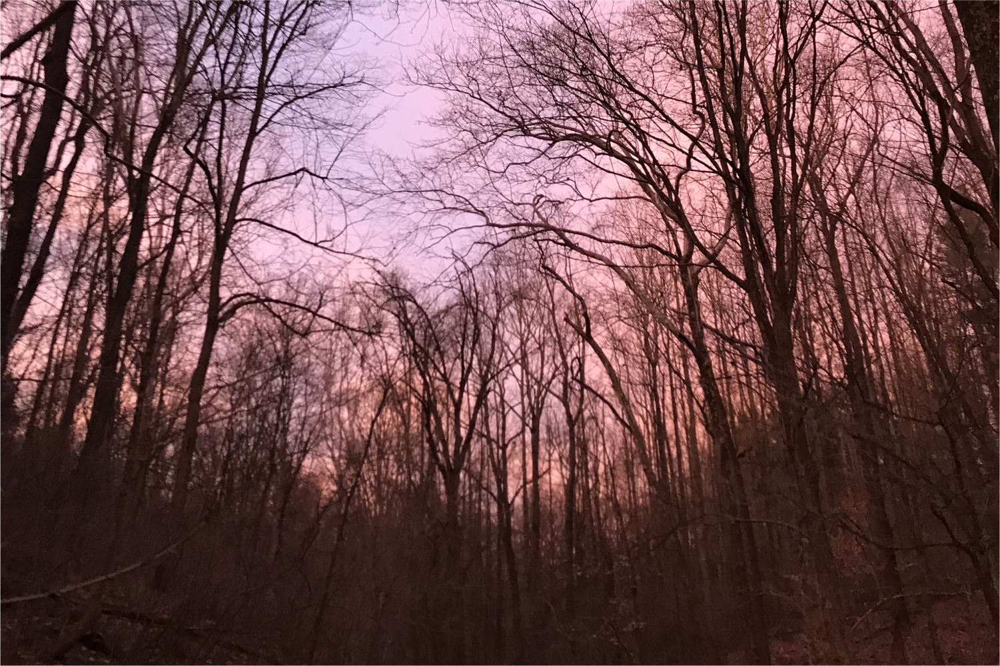
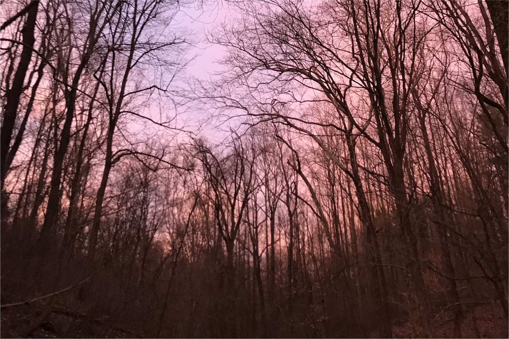

WEST RUN CEMETERY
Some of the stranger stories around Morgantown occur on West Run Road. This now busy roadway that was originally designed for farm use, appears to be a magnet for paranormal activity. Numerous accounts exist of strange balls of light moving through and above the woods along the road near a popular bike path. These balls of light are said to rapidly dart up down and in all directions. What’s more, some have nicknamed the road “Witch Road” because it is said that witches hold Sabbaths in the area. It is possible that such stories arose because just off West Run, barely visible from the roadway, is the Monongalia County Cemetery. This graveyard houses a number of illegible tombstones and 324 graves marked only with white stones. Speculation is that it’s these souls – entombed beneath nameless graves in a potter’s field – that roam the forest and share their sorrow with the witches on West Run.
Read more at:
https://morgantownhistory.wordpress.com/2017/10/05/12-morgantown-haunts/
FIELD GUIDE
Print out your own field guide zine to help guide you as you explore this location.
Print Field Guide 
